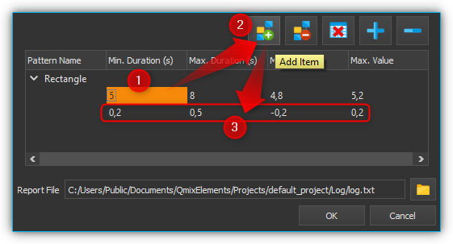

23. DAQ-Add-on
23.1. Installation
Das DAQ Add-on ist nicht im Standard Installationspaket enthalten, sondern muss als Addon zusätzlich installiert werden. Die Versionen von DAQ Add-on und installierter Software sollten übereinstimmen. Wenn Sie z.B. das DAQ Add-on mit der Versionsnummer 20190721 installieren möchten, sollte die CETONI Elements Software mit der Versionsnummer 20190721 installiert sein.
Wichtig
Die Versionsnummer der CETONI Elements Software und des DAQ Plugins sollten übereinstimmen.
Bitte schließen Sie vor der Installation alle anderen Programme.
Wichtig
Installieren Sie das DAQ Plugin + Gerätetreiber, bevor Sie Ihre DAQ Geräte erstmalig über USB mit dem PC verbinden.
Starten Sie zur Installation die Datei
CETONI_Elements_DAQ_Setup_64bit.exe. Der
Installationsassistent führt Sie anschließend durch die Installation der
Software- und Hardware-Treiber.
Wichtig
Unter Windows müssen Sie mit Administratorrechten angemeldet sein, um die Installation der Hardware-Treiber durchführen zu können.
23.2. Einführung
Das DAQ-Plugin dient der Aufzeichnung und Auswertung von Daten, welche mit hoher Messrate erfasst wurden (> 1000 Samples pro Sekunde). Es werden Geräte unterstützt, die hohe Datenerfassungsraten erlauben (z.B. National Instruments USB 600x Multifunktions-I/O-Geräte). Das Mess-Plugin unterstützt aber auch Geräte mit niedriger Datenerfassungsrate. Die Daten werden gleichzeitig in ein Prozessdatendiagramm und in eine CSV-Datei geloggt. Eine separate Konfiguration ist nicht erforderlich. Zur Anzeige des Mess-Diagramms klicken Sie in der Seitenleiste auf die Schaltfläche DAQ ❶ (siehe Abbildung unten).

In der Abbildung oben sehen Sie die wichtigsten Bedienelemente:
DAQ-Schaltflächen – Hiermit blenden Sie das Prozessdaten-Diagramm, sowie die Workbench für die Ergebnisanalyse der Mustererkennung ein. Ersteres wird im Abschnitt Diagramm Navigation und Bedienung näher erläutert, letzteres im Abschnitt Ergebnisanalyse für die Mustererkennung.
Zeichenfläche – Hier sehen Sie die Kurven aller Prozessdaten die von dem Diagramm aufgezeichnet werden.
Legende – Die Legende enthält die Bezeichnung aller Kurven die im Diagramm aufgezeichnet werden mit der entsprechenden Farbe. Über die Legende können Kurven selektiv ein- / und ausgeblendet werden.
Werkzeugleiste – Hier finden Sie Schaltflächen zur Konfiguration der Datenaufzeichnung, zum Starten und Stoppen der Aufzeichnung und zur Navigation innerhalb der Darstellung.
23.3. Werkzeugleiste
|
Öffnet den Konfigurationsdialog zur Konfiguration der Datenerfassung |
|
Startet / stoppt die Datenaufzeichnung |
|
Handwerkzeug zum Verschieben des aktuellen Ausschnitts der im Diagramm angezeigt wird |
|
Vergrößerungsrahmen aufziehen zum gezielten Vergrößern bestimmter Bereiche |
|
Passt die Skalierung der X-Achse so an, dass alle Messwerte auf den Bildschirm passen |
|
Passt die Skalierung der Y-Achse so an, dass alle Messwerte auf den Bildschirm passen |
|
Passt die Skalierung der X-Achse und Y-Achse so an, dass alle Messwerte auf den Bildschirm passen |
|
Aktiviert die automatische Skalierung – solange Messewerte aufgezeichnet werden, wird die Skalierung der X- und Y-Achse automatisch so angepasst, dass alle Messwerte auf den Bildschirm passen. |
|
Alle Kurven anzeigen. Wenn Kurven ausgeblendet sind, werden diese wieder eingeblendet. |
|
Löscht alle Daten aus dem Diagramm |
|
Skalierung umschalten. Damit schalten Sie die Skalierung der X-Achse zwischen absolutem Zeit-/Datumsstempel und relativer Zeit in Sekunden und Millisekunden seit Start der Aufzeichnung um. |
|
Exportiert ein Bild des der aktuell dargestellten Ausschnitts |


23.4. Konfigurationsdialog
23.4.1. Übersicht Konfigurationsdialog

Klicken Sie in der Werkzeugleiste auf die Schaltfläche Configure data acquisition, um den Konfigurationsdialog (unten) zu öffnen.

Der Konfigurationsdialog besteht im Wesentlichen aus den folgenden Bereichen:
Geräteliste (Device List) – die Geräteliste enthält alle Geräte von denen Prozessdaten aufgezeichnet werden können. Mit der Filterauswahl über der Geräteliste, können Sie diese nach einem bestimmten Gerätetyp (z.B. Ventile) filtern.
DAQ Channels – hier sehen Sie in tabellarischer Form alle Kurven die vom Diagramm aufgezeichnet werden.
DAQ Configuration – in diesem Bereich können Sie die Sample-Rate anpassen und den Pfad der CSV-Log-Datei angeben, die gleichzeitig zu dem graphischen Diagramm geschrieben wird.
23.4.2. Übersicht Tabelle DAQ Channels

Die Tabelle DAQ Channels zeigt in tabellarischer Form die konfigurierten Datenerfassungskanäle. Jede Zeile in der Tabelle entspricht genau einer Kurve in der grafischen Darstellung. Folgende Spalten sind vorhanden:
Channel – zeigt die Kanalnummer des entsprechenden Kanals
Device – enthält den Gerätenamen des Gerätes, von dem ein bestimmter Gerätewert aufgezeichnet werden soll und das Geräteicon
Property – dies ist der Name der Geräteeigenschaft / des Prozessdatenwertes, der aufgezeichnet wird. Den Typ der Geräteeigenschaft (numerischer oder boolescher Wert) können Sie an dem Typ-Icon einfach erkennen.

Numerischer Wert

Boolescher Wert

Text
Label – hier können Sie eine eigene Bezeichnung des Kanals festlegen. Diese Bezeichnung erscheint dann in der Legende des Graphen.
Zum Hinzufügen von Kanälen führen Sie einfach folgende Schritte durch.
23.5. Datenaufzeichnung konfigurieren.
Schritt 1- Kanäle hinzufügen

Um einen Kanal hinzuzufügen, verwenden Sie die Tabelle Logger Channels. Ziehen Sie dazu den entsprechenden Eintrag aus der Device List per Drag-&-Drop (Ziehen und Ablegen) in die Tabelle Logger Channels. Der neue Kanal wird an der Stelle hinzugefügt, an der Sie die Maustaste loslassen (siehe Abbildung oben).
Tipp
Um die Geräteauswahl zu erleichtern, können Sie die Geräteliste nach Gerätetyp filtern.
Schritt 2- Geräteeigenschaft auswählen
Wählen Sie nun im Bereich der Diagrammkurven DAQ Channels die Geräteeigenschaft (Property) aus, die Sie aufzeichnen möchten. Klicken Sie dafür doppelt in die Property Spalte des Gerätes, welches Sie konfigurieren möchten. Nach dem Doppelklick wird Ihnen ein Auswahlfeld angezeigt, aus dem Sie die Geräteeigenschaft auswählen können (siehe Abbildung unten).

Schritt 3 – Kanalbeschriftung festlegen
In der Spalte Label können Sie für jeden Kanal eine eigene Beschriftung vergeben. Diese Beschriftung wird später dann in der Legende des Graphen als Beschriftung der Kurve angezeigt.

Klicken Sie zum Ändern der Beschriftung doppelt in die Tabellenzelle (siehe Abbildung oben) und geben Sie dann die neue Bezeichnung ein.
Wichtig
Bei der Auswahl einer anderen Geräteeigenschaft wird automatisch eine neue Kanalbezeichnung vergeben. D.h. Sie sollten die Kanalbezeichnung erst nach der Auswahl der Geräteeigenschaft festlegen.
23.5.1. Kanäle löschen
Um einen oder mehrere Kanäle zu löschen, markieren Sie zuerst die Kanäle mit der Maus. Sie können dann die Kanäle löschen, indem Sie entweder die Entf-Taste drücken oder mit der rechten Maustaste das Kontextmenü aufrufen und den Menüpunkt auswählen.


Sie können alle Kanäle des Loggers gleichzeitig löschen, indem Sie im Kontextmenü den Punkt Clear Logger auswählen.
Schritt 4 – Sample Rate festlegen
Im Feld Sample Rate (Hz) können Sie die Frequenz angeben, mit der Messwerte im Plot und in der Log-Datei aufgezeichnet werden. Die maximale Sample Rate hängt von der Messfrequenz ab, die mit der verwendeten Hardware möglich ist.

Wichtig
Wählen Sie die Samplerate stets nur so groß wie nötig. Bei hohen Sampleraten entstehen sehr viele Daten. Das Zeichnen von großen Datenmengen benötigt mehr Rechnerleistung und kann ggf. die Bedienbarkeit der Anwendung verlangsamen.
Wichtig
Verwenden Sie zur Datenaufzeichnung über mehrere Tage eine niedrige Samplerate oder verwenden Sie stattdessen den grafischen Logger.
Die Konfiguration wird beim Beenden der Anwendung gespeichert und beim erneuten Start wieder geladen.
Schritt 5 – Log-Datei konfigurieren
In diesem Bereich können Sie den Namen der CSV.Log-Dateiangeben ❶, in die, zusätzlich zum graphischen Logger, alle aufgezeichneten Messwerte geschrieben werden. Außerdem können Sie das Trennzeichen angeben, mit dem die Werte der einzelnen Kanäle in der Log-Datei voneinander getrennt werden ❷.

23.6. Datenerfassung starten / stoppen

Über die entsprechende Schaltfläche in der Werkzeugleiste können Sie die Datenaufzeichnung starten und stoppen.
23.7. Diagramm Navigation und Bedienung
23.7.1. Übersicht
Das DAQ-Plug-in bietet eine Reihe von Möglichkeiten zur Anpassung der Datendarstellung. Dazu gehören die Größenänderung von Teilen einer Kurve und das Ein- und Ausblenden einzelner Kurven. Das Diagramm besteht aus einem Plotbereich ❶ sowie einer X-Achse (Zeit) ❸ und einer Y-Achse (Prozessdaten) ❹.

Die Zeitachse zeigt Datum und Uhrzeit als absolute Werte an. Die Prozessdatenachse zeigt die jeweiligen Messdaten; sie ist einheitenlos, da sie potentiell eine Vielzahl von sehr unterschiedlichen Werten und Maßeinheiten repräsentiert.
Wenn Sie mit der rechten Maustaste in die Zeichenfläche klicken, wird ein Kontextmenü ❷ mit zusätzlichen Funktionen angezeigt.
23.7.2. Ausschnitt verschieben

Mit dem Verschiebewerkzeug (Pan Tool) können Sie bequem den Ausschnitt verschieben, der im Diagramm angezeigt wird. Aktivieren Sie das Werkzeug durch anklicken der Schaltfläche. Klicken Sie nun in die Zeichenfläche und bewegen Sie die Maus mit gedrückter Maustaste um den Ausschnitt zu verschieben.
Wichtig
Das Verschieben des Ausschnittes bewirkt eine Deaktivierung der automatischen Skalierung.
23.7.3. Werte einer Kurve anzeigen
Wenn das Verschiebewerkzeug (Pan Tool) aktiv ist, können Sie den Mauszeiger über eine Kurve bewegen, um sich den Wert an der betreffenden Position anzeigen zu lassen.

23.7.4. Vergrößerung mit Mausrad einstellen
Durch drehen des Mausrades können Sie die Vergrößerung der Anzeige erhöhen (hinein zoomen) oder verringern (heraus zoomen).
|
Vergrößerungsfaktor erhöhen (hinein zoomen) |
|
Vergrößerungsfaktor verringern (heraus zoomen) |


23.7.5. Ausschnittvergrößerung mit Vergrößerungsrahmen wählen

Mit dem Vergrößerungswerkzeug (Zoom Tool) können Sie gezielt einen Ausschnitt auswählen, den Sie vergrößert darstellen möchten. Gehen Sie dafür wie folgt vor (siehe Abbildung unten):
Klicken Sie mit der linken Maustaste in die Zeichenfläche um die erste Ecke des Vergrößerungsrahmens festzulegen.
Ziehen Sie nun mit gedrückter Maustaste ein Vergrößerungsrahmen auf die gewünschte Größe.
Sobald Sie die Maustaste loslassen, wird der gewählte Ausschnitt auf die aktuelle Größe der Anzeige skaliert.

23.7.6. Anzeige passend / automatisch skalieren
Die Werkzeugleiste und das Kontextmenü enthalten verschiedene Tools um die Anzeige automatisch so anzupassen, dass alle Daten im sichtbaren Bereich liegen.
Folgende Möglichkeiten der Anpassung sind vorhanden:
|
Passt die Skalierung der X-Achse so an, dass alle Messwerte auf den Bildschirm passen |
|
Passt die Skalierung der Y-Achse so an, dass alle Messwerte auf den Bildschirm passen |
|
Passt die Skalierung der X-Achse und Y-Achse so an, dass alle Messwerte auf den Bildschirm passen |
|
Aktiviert die automatische Skalierung – solange Messwerte aufgezeichnet werden, wird die Skalierung der X- und Y-Achse automatisch so angepasst, dass alle Messwerte auf den Bildschirm passen. |
Die automatische Skalierung können Sie auch über das Kontextmenü getrennt für X- und Y-Achse aktivieren:

Wichtig
Die Änderung der Vergrößerung oder das Verschieben des Ausschnittes bewirken eine Deaktivierung der automatischen Skalierung.
23.7.7. Kurven ein- und ausblenden
Um die Skalierung und Sichtbarkeit zu verbessern, können Sie einzelne Kurven ein- oder ausblenden. Klicken Sie dazu mit der rechten Maustaste auf das gewünschte Element in der Plotlegende und wählen Sie die gewünschte Funktion, um entweder nur die entsprechende Kurve auszublenden oder alle anderen außer der entsprechenden Kurve , wie in der Abbildung unten dargestellt.

Wenn Sie alle ausgeblendeten Kurven wieder einblenden möchten, aktivieren Sie in der Zeichenfläche das Kontextmenü mit der rechten Maustaste und wählen Sie dann den Menüpunkt (siehe Abbildung unten).

23.7.8. Kurvenfarbe ändern
Um eine andere Kurvenfarbe zu wählen, klicken Sie mit der rechten Maustaste auf einen Eintrag in der Legende. Wählen Sie im Kontextmenü den Menüpunkt (siehe Abbildung unten).

Es wird Ihnen nun ein Farbauswahldialog angezeigt, in dem Sie eine beliebige Kurvenfarbe auswählen können.

23.7.9. Diagramm-Bild exportieren

Über den Menüeintrag im Kontextmenü können Sie ein Bild des aktuellen Diagramms exportieren. In dem Dateidialog der nun eingeblendet wird, wählen Sie zuerst ihr Zielverzeichnis aus.

Anschließend geben Sie
den Dateinamen der Bilddatei ein ❶. Dann wählen Sie in dem Auswahlfeld
den Dateityp ❷ der Bilddatei aus. Die Exportfunktion unterstützt sowohl
Bilddateien (png, jpg...) als auch skalierbare Vektorgrafiken
(.pdf, svg...). Wählen Sie das für Sie passende Bildformat aus.

Klicken Sie zum Abschluss auf Save❸, um den Export zu starten.
23.7.10. Diagrammdaten löschen

Klicken Sie im Kontextmenü auf den Eintrag um alle aufgezeichneten Daten zu löschen und mit einem leeren Diagramm die Aufzeichnung neu zu beginnen.

23.7.11. Skalierung der X-Achse umschalten

Sie können die Skalierung der X-Achse zwischen zwei verschiedenen Modi umschalten. Standardmäßig zeigt die X-Achse einen absoluten Zeit- / Datumsstempel an.

Sie können die X-Achse aber auch auf die Anzeige der relativen Zeit in Sekunden und Millisekunden umschalten. D.h. der Zeitpunkt t0 markiert hier den Zeitpunkt an dem die Aufzeichnung gestartet wurde .
Um die Achse umzuschalten, klicken Sie mit der rechten Maustaste in das Diagramm und wählen Sie dann aus dem Kontextmenü den Punkt .

23.8. Script Funktionen

Die Datenerfassung des DAQ Plugins kann über das CETONI Elements Scriptsystem gestartet und gestoppt werden, um die Aufnahme von Daten zu automatisieren oder mit anderen Prozessen zu synchronisieren. Die entsprechenden Funktionen finden Sie in der DAQ Kategorie der verfügbaren Scriptfunktionen.
23.8.1. Start Data Acquisition
Mit dieser Funktion starten Sie die Datenerfassung mit den aktuell konfigurierten Einstellungen und Kanälen. Der Inhalt des Diagramms wird dabei nicht gelöscht.
23.8.2. Stop Data Acquisition

Diese Funktion stoppt die Aufzeichnung der Daten.
23.9. Einlesen von Log-Dateien
Das DAQ-Addon bietet die Möglichkeit, aufgezeichnete Log-Dateien noch einmal in den Plot einzulesen. Das Tool zum Einlesen einer Log-Datei ist dabei in der Lage zusammengehörige Log-Dateien einer Langzeitaufzeichnung zu erkennen und alle zusammengehörigen Log-Dateien in chronologischer Reihenfolge einzulesen. Bei großen Datenmengen werden einzelne Datenpunkte ausgelassen, sodass maximal eine Million Datenpunkte pro Log-Kurve im Plot angezeigt werden.
Wichtig
Das Einlese-Tool erkennt zusammengehörige Log-Dateien und liest diese in chronologischer Reihenfolge ein.
Wichtig
Es werden maximal eine Million Datenpunkte pro Log-Kurve im Plot angezeigt.
Um eine einzelne Log-Datei oder eine Serie von Log-Dateien einzulesen, gehen Sie bitte wie folgt vor.
Wählen Sie aus der Werkzeugleiste das Tool zum Einlesen von Log-Dateien.
Wählen Sie eine beliebige Datei aus der Log-Dateien-Serie aus, die Sie einlesen möchten. Im dargestellten Beispiel erkennt das Tool anhand der Dateinummerierungen, dass die Log-Dateien zusammengehören.

Anschließend werden die Log-Dateien eingelesen. Im Progress-Fenster wird der Fortschritt des Einlesevorgangs angezeigt. Während des Einlesens können Sie mit der Software weiterarbeiten.

Nach Beendigung des Einlesevorgangs werden die Log-Kurven mit Angabe des Dateinamens im graphischen Plot angezeigt.

23.10. Mustererkennung
Das DAQ-Addon bietet die Möglichkeit, Plot-Kurven nach Mustern zu durchsuchen und diese im graphischen Plot zu kennzeichnen.
23.10.1. Konfigurieren und Ausführen der Mustererkennung
Im folgenden einfachen Beispiel wird die Mustererkennung anhand der Erkennung von Rechtecksignalen erläutert.
Gegeben ist eine Plot-Kurve, welche Rechtecksignale mit einer Breite zwischen 5 und 8 Sekunden, sowie einem Spitzenwert von 5V enthält.

Um die Mustererkennung zu konfigurieren, klicken Sie mit der rechten Maustaste auf die Kurve , die sie untersuchen möchten, ❶ und wählen ❷.

In dem Dialog, der sich anschließend öffnet, müssen Sie zunächst einen neuen Pattern Scanner erstellen. Klicken Sie hierzu auf die Schaltfläche Add New Time Value Pattern Scanner ❶. Anschließend können Sie dem Pattern Scanner einen aussagekräftigen Namen geben ❷. Im Beispiel wird Rectangle Pattern Scanner gewählt. Mit der Schaltfläche ❸ löschen Sie den selektierten Pattern Scanner und mit ❹ können sie alle Pattern Scanner löschen.

Während der Mustererkennung wird ein Report-File erzeugt. Dieses enthält die Messwerte um den Median des erkannten Musters. Wieviele Werte um den Median im Report-File enthalten sein sollen, können Sie über das Eingabefeld Number of Median Values ❶ konfigurieren. Möchten Sie, dass alle Messwerte innerhalb des erkannten Musters im Report-File angegeben werden, wählen sie das Kontrollkästchen Use All ❷.

Im nächsten Schritt konfigurieren Sie die Muster, die durch den Pattern Scanner erkannt werden sollen. Hierzu müssen Sie den Pattern Scanner ❶ auswählen, dessen Muster Sie konfigurieren wollen. Ein neues Muster können Sie dann über die Schaltfläche Create Item erzeugen ❷. Dem erzeugten Muster können Sie nun einen aussagekräftigen Namen geben ❸.

Im nächsten Schritt muss das zu erkennende Muster beschrieben werden. Da Rechtecksignale mit einer Dauer von 5 – 8 Sekunden und eine Höhe von 5V erkannt werden sollen, wird ein Abschnitt mit einer minimalen Dauer von 5 Sekunden und einer maximalen Dauer von 8 Sekunden, sowie einem minimalen Wert von 4,8 und einem maximalen Wert von 5,2 erstellt. Der Wertebereich wird zwischen 4,8 und 5,2 gewählt, um ein gewisses Rauschen des Messsignals zu tolerieren. Tragen Sie hierzu in die erste Musterzeile, die automatisch erzeugt wurde, die genannten Werte ein.

Anschließend muss das Ende des Rechteckmusters erkannt werden. Das Messsignal muss für eine gewisse Zeit wieder auf ca. 0V zurückgehen. Es wird somit ein neuer Abschnitt mit einer Dauer von 0,2 bis 0,5 Sekunden, in dem sich das Messsignal zwischen -0,2 und +0,2 aufhalten muss, eingefügt. Klicken Sie hierzu die Stelle an, nach welcher der neue Abschnitt eingefügt werden soll ❶, und klicken Sie dann auf Add Item ❷. Tragen Sie anschließend die genannten Werte in die neu erzeugte Zeile.
Tipp
Ein einzelner Pattern-Scanner kann mehrere Muster erkennen. Wiederholen Sie die Schritte 5 – 7, um ihrem Pattern Scanner ein weiteres Muster hinzuzufügen.
Im vorletzten Schritt können Sie noch einen Dateipfad angeben, an dem das Report-File abgelegt wird. Klicken Sie hierzu auf die Schaltfläche Report File und geben Sie im sich darauf öffnenden Dateidialog den Dateipfad und -namen an. Klicken Sie abschließend auf die Schaltfläche OK, um die Konfiguration des Pattern-Scanners abzuschließen.
Wichtig
Die Einstellungen der Mustererkennung für eine Plot-Kurve werden gespeichert. Wird die Plot-Kurve erneut geladen, wird ihr der entsprechende Pattern-Scanner automatisch zugeordnet.
Im letzten Schritt führen Sie die Mustererkennung aus. Klicken Sie hierzu auf die Schaltfläche Run Pattern Scan ❶. Die Anfangs- ❷ und Endpunkte ❸ der erkannten Muster werden daraufhin im Plot markiert. Eine Meldung ❹ zeigt Ihnen an, wieviele Muster in den untersuchten Plot-Kurven erkannt wurden. Außerdem wird das Report-File geschrieben.

23.10.2. Verwendung eines existierenden Pattern-Scanners
Einen Pattern-Scanner, den Sie einmal konfiguriert haben, können Sie einer Vielzahl an anderen Plot-Kurven zuordnen. Gehen Sie hierzu wie folgt vor:
Klicken Sie mit der rechten Maustaste auf die Kurve die Sie untersuchen möchten und wählen Sie Configure Pattern Scan.
Im sich daraufhin öffnenden Dialog wählen Sie den Pattern-Scanner, den Sie verwenden möchten und klicken anschließend auf OK.

23.10.3. Aktivieren / Deaktivieren der Mustererkennung für eine Plot-Kurve
Um die Mustererkennung für eine Plot-Kurve zu aktivieren oder zu deaktivieren, klicken sie mit der rechten Maustaste auf die Plot-Kurve ❶ und wählen Sie ❷.

23.10.4. Ergebnisanalyse für die Mustererkennung
Übersicht
Mittels der Ergebnisanalyse für die Mustererkennung können Sie die einzelnen Resultate einer Mustererkennung innerhalb einer Messwertkurve miteinander vergleichen. Die einzelnen Resultate werden in einem separaten Analyse-Plot übereinandergelegt. Hierdurch können Sie beurteilen, wie sie sich im Verlauf der Messung verändert haben. Zur Ergebnisanalyse der Mustererkennung gelangen Sie über die Schaltfläche Pattern Analysis ❶ in der Gruppe DAQ (siehe Abbildung unten).

Pattern-Analysis-Schaltfläche – Über diese Schaltfläche gelangen Sie zur Ergebnisanalyse der Mustererkennung.
Diagramm – Im Diagramm werden die Messwerte eines jeden einzelnen Resultats der Mustererkennung übereinander dargestellt. Hier können Sie die einzelnen Resultate miteinander vergleichen.
Legende – Die Legende enthält die Bezeichnung aller Kurven die im Diagramm mit der entsprechenden Farbe dargestellt werden. Die Kurvenbezeichnung enthält den relativen Zeitpunkt an dem das Resultat in der ursprünglichen Messkurve aufgetreten ist.
Werkzeugleiste – Hier finden Sie Schaltflächen zur Navigation innerhalb der Darstellung, sowie zur Auswahl der Plot-Kurve im Prozessdatendiagramm, deren Mustererkennungsresultate in der Ergebnisanalyse dargestellt werden sollen. Die Bedienelemente der Navigation arbeiten genauso wie die Bedienelemente im Prozessdatendiagramm (siehe Abschnitt Diagramm Navigation und Bedienung) und werden daher nicht noch einmal erläutert.
Durchführung einer Ergebnisanalyse
In Abschnitt Konfigurieren und Ausführen der Mustererkennung wird die Durchführung einer Mustererkennung beschrieben. Angenommen nach der Durchführung einer Mustererkennung liegen zwei Plot-Kurven mit Resultaten vor (siehe Abbildung unten).

Im ersten Schritt wählen Sie aus der DAQ-Gruppe die Schaltfläche Pattern Analysis um zur Ergebnisanalyse zu gelangen.

Im zweiten Schritt wählen Sie aus dem Drop-Down-Feld in der Werkzeugleiste die Plot-Kurve aus, deren Ergebnisse Sie dargestellt haben möchten. Im dargestellten Beispiel wird „Channel 2 Extinction“ gewählt

Im Diagramm werden nun die einzelnen Ergebnisse der Mustererkennung für „Channel 2 Extinction“ dargestellt. Bei dieser Plot-Kurve wurden zwei Übereinstimmungen mit dem konfigurierten Muster festgestellt. Man erkennt, dass beide Resultate die gleiche Amplitude aufweisen. Das Resultat, welches nach 30,7 Sekunden aufgetreten ist, dauert jedoch um ca. 1,6 Sekunden länger als das Resultat, welches nach 12,9 Sekunden aufgetreten ist.